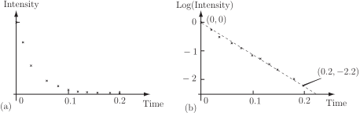

4 Engineering Example 2
4.1 Exponential decay of sound intensity
Introduction
The rate at which a quantity decays is important in many branches of engineering and science. A particular example of this is exponential decay. Ideally the sound level in a room where there are substantial contributions from reflections at the walls, floor and ceiling will decay exponentially once the source of sound is stopped. The decay in the sound intensity is due to absorbtion of sound at the room surfaces and air absorption although the latter is significant only when the room is very large. The contributions from reflection are known as reverberation . A measurement of reverberation in a room of known volume and surface area can be used to indicate the amount of absorption.
Problem in words
As part of an emergency test of the acoustics of a concert hall during an orchestral rehearsal, consultants asked the principal trombone to play a single note at maximum volume. Once the sound had reached its maximum intensity the player stopped and the sound intensity was measured for the next 0.2 seconds at regular intervals of 0.02 seconds. The initial maximum intensity at time 0 was 1. The readings were as follows:
| time | 0 | 0.02 | 0.04 | 0.06 | 0.08 | 0.10 | 0.12 | 0.14 | 0.16 | 0.18 | 0.20 |
| intensity | 1 | 0.63 | 0.35 | 0.22 | 0.13 | 0.08 | 0.05 | 0.03 | 0.02 | 0.01 | 0.005 |
Draw a graph of intensity against time and, assuming that the relationship is exponential, find a function which expresses the relationship between intensity and time.
Mathematical statement of problem
If the relationship is exponential then it will be a function of the form
and a log-linear graph of the values should lie on a straight line. Therefore we can plot the values and find the gradient and the intercept of the resulting straight-line graph in order to find the values for and
is the gradient of the log-linear graph i.e.
and is found from where the graph crosses the vertical axis
Mathematical analysis
Figure 9(a) shows the graph of intensity against time.
We calculate the (intensity) to create the table below:
| time | 0 | 0.02 | 0.04 | 0.06 | 0.08 | 0.10 | 0.12 | 0.14 | 0.16 | 0.18 | 0.20 |
| (intensity) | 0 | -0.22 | -0.46 | -0.66 | -0.89 | -1.1 | -1.3 | -1.5 | -1.7 | -2.0 | -2.2 |
Figure 9(b) shows the graph of (intensity) against time.
Figure 9 :

We can see that the second graph is approximately a straight line and therefore we can assume that the relationship between the intensity and time is exponential and can be expressed as
The of this gives
From the graph (b) we can measure the gradient, using
giving
The point at which it crosses the vertical axis gives
Therefore the expression becomes
Interpretation
The data recorded for the sound intensity fit exponential decaying with time. We have used a log-linear plot to obtain the approximate function: